The previous set was rejected for not resembling Ryan, for SSJ1 facing away, and for the forms looking past the viewer. This one is built from his own photographs, and every state faces the viewer: each is the south rotation of a character state, so a forward gaze is a property of the render rather than something hoped for.
One internal identity was built first, deliberately with a buzz cut so no curls can survive under gold hair. Normal, SSJ1, SSJ2 and SSJ3 are each a state of that identity — none is chained off another, so a defect in one cannot travel into the next. The rejected set is kept at rejected-0887f3f/ and is not shown here as a current result.


Ryan's photograph beside all four states at one display scale.

Eye centres ringed, with a line dropped toward the viewer. All four states show both eyes with the pupils on the screen.

Shared character 7cac30da. Buzzed on purpose: this is what the three transformed forms are grown from, so there is no second hairstyle underneath any of them. It is not a public state.


| total height | 130 |
|---|---|
| total width | 58 |
| opaque px | 4941 |
| head width | 30 |
| shoulder width | None |
| eye px | 40 |
| float offset | 0 |
| ground row | 122 |
| aura px | 0 |
| lightning px | 0 |


| total height | 134 |
|---|---|
| total width | 64 |
| opaque px | 5344 |
| head width | 46 |
| shoulder width | None |
| eye px | 47 |
| float offset | 0 |
| ground row | 123 |
| aura px | 3965 |
| lightning px | 0 |


| total height | 136 |
|---|---|
| total width | 63 |
| opaque px | 5293 |
| head width | 43 |
| shoulder width | None |
| eye px | 36 |
| float offset | 0 |
| ground row | 122 |
| aura px | 4633 |
| lightning px | 71 |


| total height | 144 |
|---|---|
| total width | 90 |
| opaque px | 9025 |
| head width | 58 |
| shoulder width | None |
| eye px | 29 |
| float offset | 8 |
| ground row | 111 |
| aura px | 5314 |
| lightning px | 467 |
SSJ1 was rejected outright and regenerated from the shared identity. Normal, SSJ2 and SSJ3 were not regenerated — they received tightly masked pixel repairs only, and the page below proves nothing outside those masks moved.
In a front-facing sprite Ryan's anatomical LEFT eye is on the VIEWER'S RIGHT. That is the defective one: its sclera was split in two by a black bar and it was two pixels wider than the good eye. It was rebuilt to the good eye's geometry. 22 pixels changed, all inside x73–79, y45–49; 0 outside the mask. Body sha d2e8b4c1ef98fc45 → 1172964a44ca2f02.
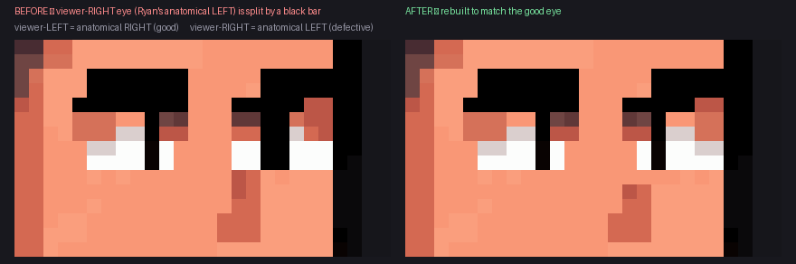
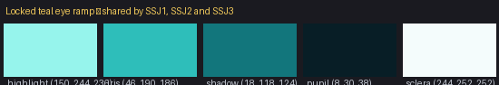
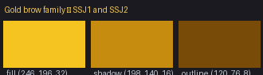
ssj2: 109 pixels changed (32 iris, 77 brow), 0 outside the eye/brow masks. sha 58ba5fb3c31550b4 → 447e40e9595e8a50.
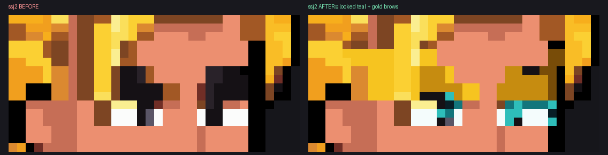
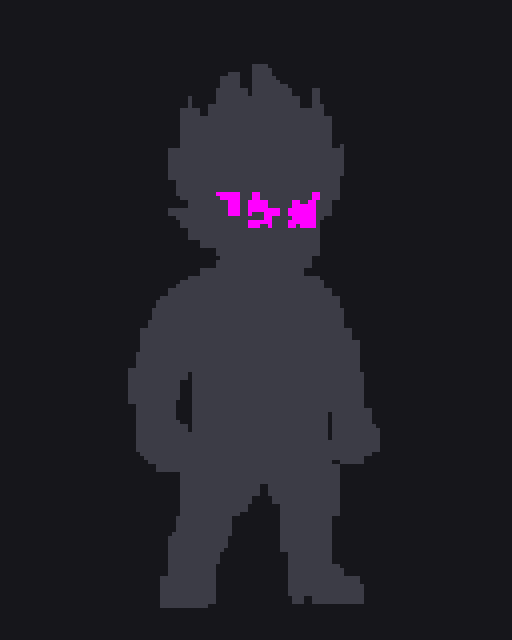
ssj3: 23 pixels changed (23 iris, 0 brow), 0 outside the eye/brow masks. sha 187d475ce241f01c → ddced409075d05bd. SSJ3 has no ordinary eyebrows, so there were no brow pixels to regold — its ridge geometry is untouched.
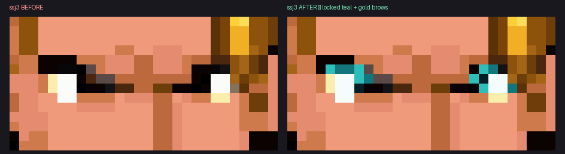
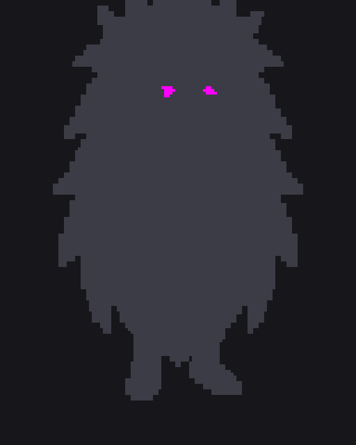
The rejected state e9d8bb17 is recorded never-reuse: none of its pose, body, head, hair, face, effects or pixels are used. All four candidates were generated directly from the shared identity 7cac30da. B was selected.
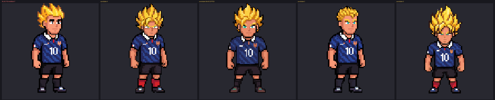
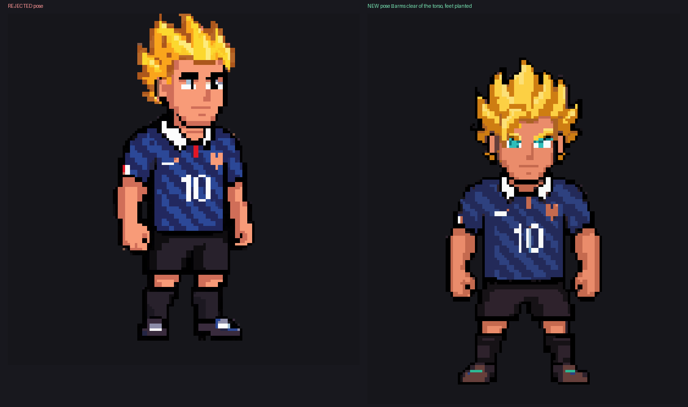
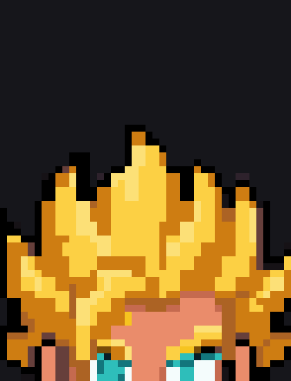
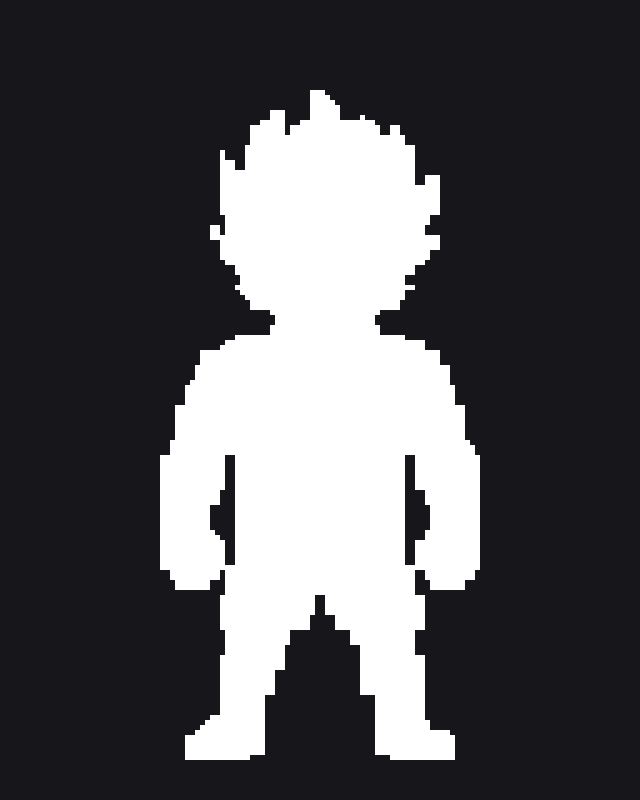
Built from the reference's three-key pulse and its measured four-step ramp: gold (254,197,0), yellow (254,225,65), pale (254,249,187), white-hot (242,242,242). The effects canvas was enlarged to 256×288 with the body at a constant (64,64) — Ryan himself is never resampled.
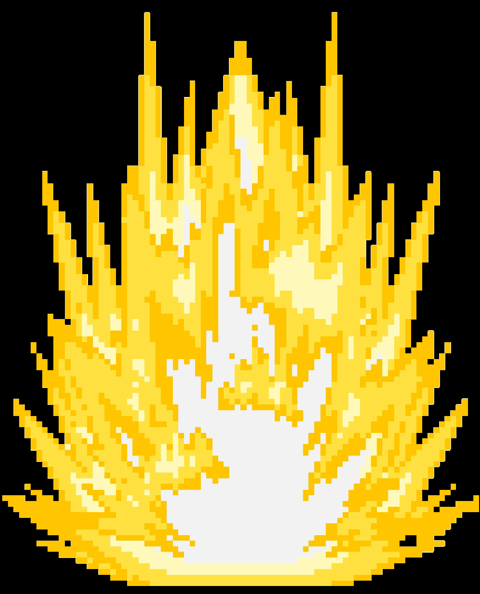
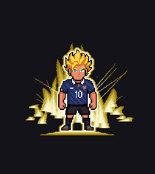
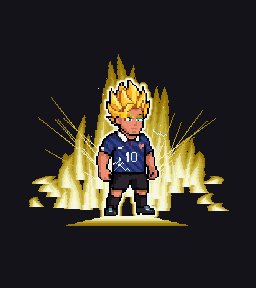
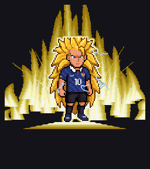
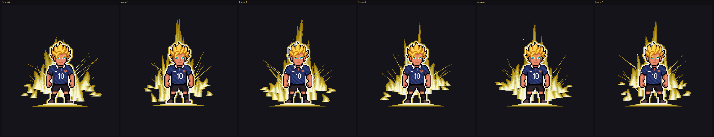
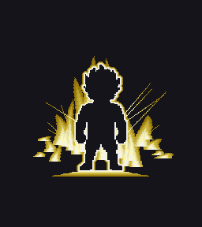
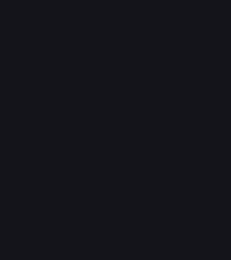
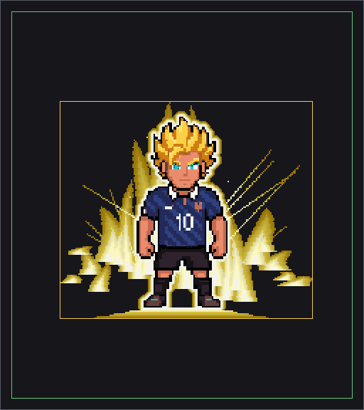
| frame | aura px | lightning px | aura on body | lightning on aura | margin |
|---|---|---|---|---|---|
| 0 | 6849 | 0 | 0 | 0 | 36 |
| 1 | 6075 | 0 | 0 | 0 | 31 |
| 2 | 6887 | 0 | 0 | 0 | 29 |
| 3 | 5659 | 0 | 0 | 0 | 37 |
| 4 | 6568 | 0 | 0 | 0 | 40 |
| 5 | 6235 | 0 | 0 | 0 | 34 |
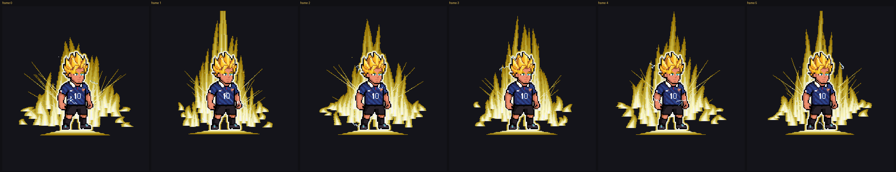
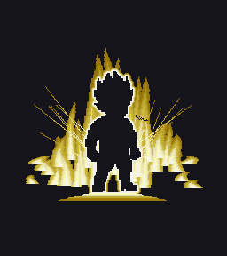
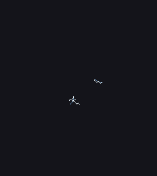
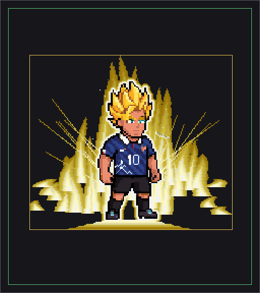
| frame | aura px | lightning px | aura on body | lightning on aura | margin |
|---|---|---|---|---|---|
| 0 | 10355 | 62 | 0 | 0 | 27 |
| 1 | 9815 | 67 | 0 | 0 | 8 |
| 2 | 9987 | 60 | 0 | 0 | 22 |
| 3 | 9860 | 53 | 0 | 0 | 17 |
| 4 | 10574 | 70 | 0 | 0 | 9 |
| 5 | 9673 | 60 | 0 | 0 | 8 |
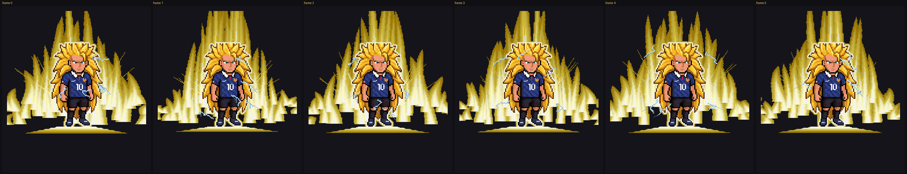
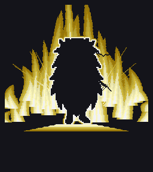
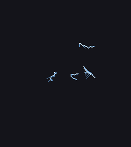
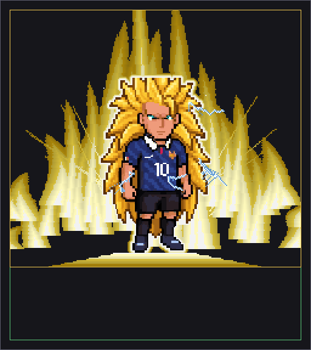
| frame | aura px | lightning px | aura on body | lightning on aura | margin |
|---|---|---|---|---|---|
| 0 | 18930 | 313 | 0 | 0 | 8 |
| 1 | 18057 | 341 | 0 | 0 | 8 |
| 2 | 18918 | 297 | 0 | 0 | 8 |
| 3 | 18522 | 300 | 0 | 0 | 8 |
| 4 | 19500 | 340 | 0 | 0 | 8 |
| 5 | 19526 | 310 | 0 | 0 | 8 |
| ladder | SSJ1 | SSJ2 | SSJ3 |
|---|---|---|---|
| aura px (mean) | 6379 | 10044 | 18909 |
| lightning px (mean) | 0 | 62 | 317 |
Tests: 71/71 final-tuning checks and 86/86 structural checks, each critical audit carrying a positive control that injects the defect and requires the audit to fail.
| slot | normal | ssj1 | ssj2 | ssj3 |
|---|---|---|---|---|
| hair_back | 17 | 280 | 139 | 3521 |
| head_skin | 342 | 273 | 283 | 422 |
| ears | 62 | 181 | 101 | 64 |
| face_shading | 53 | 48 | 230 | 110 |
| eyes | 40 | 47 | 36 | 29 |
| nose | 10 | 9 | 4 | 5 |
| mouth | 28 | 8 | 9 | 14 |
| brows_or_ssj3_ridge | 61 | 7 | 82 | 0 |
| hair_front | 544 | 706 | 807 | 1091 |
| neck | 3 | 6 | 3 | 13 |
| arm_near | 314 | 251 | 274 | 252 |
| hand_near | 88 | 86 | 88 | 64 |
| arm_far | 207 | 264 | 209 | 174 |
| hand_far | 189 | 188 | 202 | 233 |
| france_jersey | 1625 | 1736 | 1519 | 1580 |
| black_shorts | 371 | 383 | 306 | 644 |
| leg_near | 46 | 46 | 69 | 38 |
| leg_far | 46 | 43 | 43 | 32 |
| socks | 451 | 383 | 437 | 298 |
| shoes | 444 | 399 | 452 | 441 |
SSJ3's eyebrow slot is empty by design — it has a brow ridge instead. Every other slot is populated in every state.
| call | endpoint | canvas | seed | charge | balance after | result |
|---|---|---|---|---|---|---|
| 1 | create_image_pro | 128x160 | 4101 | 25 | 1806 | PARTIAL |
| 2 | create_image_pro | 128x160 | 7702 | 25 | 1781 | REJECTED |
| 3 | edit_image | 128x160 | 3310 | 20 | 1761 | ACCEPTED |
| 4 | create_character | 128x128 | 2 | 1759 | ACCEPTED | |
| 5 | create_character_state | 144x144 | 40 | 1719 | ACCEPTED | |
| 6 | create_character_state | 144x144 | 40 | 1679 | ACCEPTED | |
| 7 | create_character_state | 144x144 | 40 | 1639 | REJECTED | |
| 8 | create_character_state | 200x200 | 40 | 1599 | REJECTED | |
| 9 | create_character_state | 144x144 | 881 | 40 | 1559 | ACCEPTED |
| 10 | create_character_state | 200x200 | 4407 | 40 | 1519 | ACCEPTED |
| 11 | create_character_state | 144x144 | 2201 | pending | ||
| 12 | create_character_state | 144x144 | 9315 | 40 | 1439 | REJECTED |
| 13 | create_character_state | 144x144 | 5101 | pending | ||
| 14 | create_character_state | 144x144 | 6202 | pending | ||
| 15 | create_character_state | 144x144 | 7303 | pending | ||
| 16 | create_character_state | 144x144 | 8404 | pending |
Balance remaining after this pass: 1439 generations.